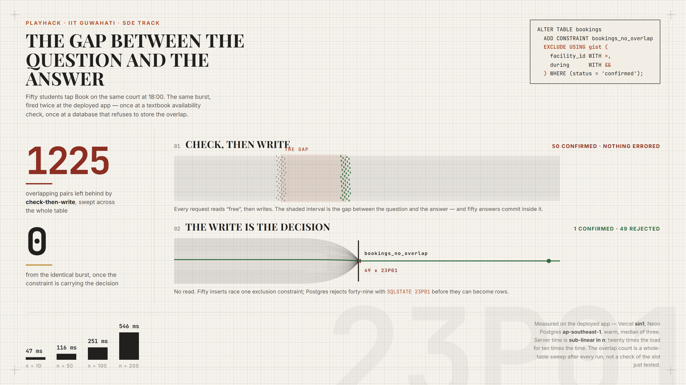
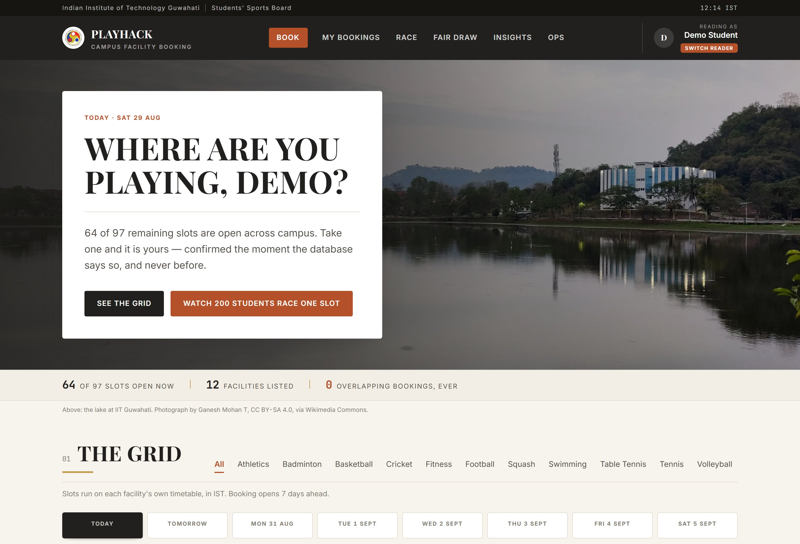
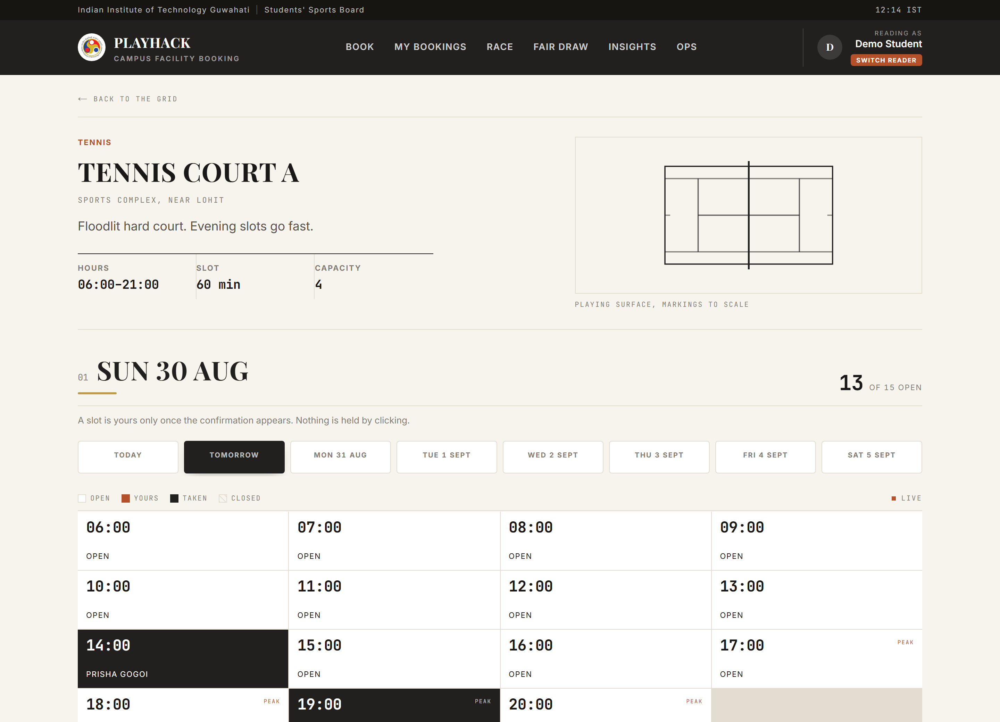
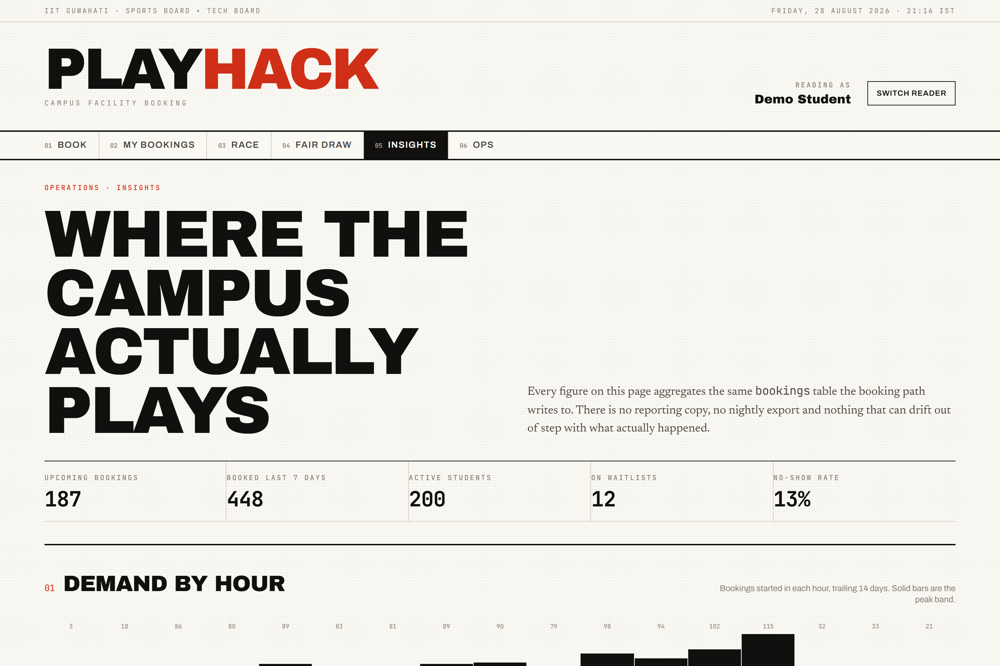

PlayHack · SDE Track · IIT Guwahati
Campus sports facility booking where the winner of a race for one court is decided by Postgres, not by our code.
The problem, in the brief's own words
“The system must confirm exactly one and reject the rest, without corrupting data.”
Almost every booking system answers this the same way — and almost every one of them is wrong.
// the question const taken = await isSlotTaken(court, slot); // the answer if (!taken) await insertBooking(court, slot);
Both lines are individually correct. Between them is a gap — and under load another request commits inside it.
The answer
ALTER TABLE bookings ADD CONSTRAINT bookings_no_overlap EXCLUDE USING gist (facility_id WITH =, during WITH &&) WHERE (status = 'confirmed');
There is no question and no answer. A booking carries a time range, and the database physically cannot store two overlapping ranges for the same facility. The loser is rejected with SQLSTATE 23P01 before it ever becomes a row — no availability check on the write path, and no application lock on the slot.
Why not a unique key
| UNIQUE (facility, starts_at) | EXCLUDE … WITH && | |
|---|---|---|
| Two bookings at 18:00 | rejected | rejected |
| 18:00–19:00 vs 18:30–19:30 | both stored | rejected |
| A two-hour closure over four slots | not expressible | one row |
| Cancelling frees the slot | needs a delete | status flip |
A booking from 18:30 does not share a start time with one from 18:00 — but it overlaps it, and overlap is what matters to a student holding a racket.

The same burst, fired twice at production
Check, then write
Fifty students walk to the same court.
The write is the decision
Every rejection is typed and carries three alternative slots.
Measured on the deployed app
All contenders attempt the insert at once. One wins; the rest block on its uncommitted row and are released together the moment it commits. Nothing in the write path serialises on n.
Vercel sin1, Neon ap-southeast-1. Median of three warm runs.
| Mode | Requests | Server | Confirmed | Overlaps |
|---|---|---|---|---|
| naive | 50 | 37 ms | 50 | 1225 |
| safe | 10 | 47 ms | 1 | 0 |
| safe | 50 | 116 ms | 1 | 0 |
| safe | 100 | 251 ms | 1 | 0 |
| safe | 200 | 546 ms | 1 | 0 |
Key features and functionality
| Feature | Functionality |
|---|---|
| Availability view | Twelve campus facilities with live open, taken and closed counts. Availability is derived from the bookings table per request — never stored, so it cannot drift. |
| Slot selection | A day grid per facility on its own timetable, in IST, seven days ahead. Updates live over Server-Sent Events. |
| Booking with a guarantee | Confirmed by the database or refused by it. Idempotency keys make a retry return the original booking rather than a second one. |
| Typed rejections | SLOT_TAKEN, QUOTA_EXCEEDED, OVERLAPS_OWN — each carrying three alternative slots and a queue position. |
| Waitlist | Join a full slot; a cancellation offers it to the next student in the same transaction, with a claim expiry. |
| Fair draw | Peak slots go to a seeded, weighted, published lottery, so the fastest wifi does not always win. |
| Operations console | Maintenance closures, which the same constraint refuses if a student already holds that window. |
| Insights | Demand by hour, a utilisation heatmap, no-show rate, and under-used prime slots. |
Overall user flow
A booking code is issued. It appears in My Bookings and the grid marks the slot as yours, live on every open screen. Cancelling releases it and promotes the waitlist in one transaction.
SQLSTATE 23P01 becomes a reason a student can act on: three alternative slots on the same grid, plus a waitlist place that is offered automatically when somebody cancels.
Wireframes and UI design



Design system. No brand hue: charcoal chrome, warm paper, rust for the single action, brass for a hairline. Every saturated colour on screen means something.
Accessible by construction. State is carried by fill rather than hue, and availability is stated three ways — dot, word, count. Motion is dropped under prefers-reduced-motion.
Technology stack
| Application | |
|---|---|
| Next.js 15 | App Router, React Server Components |
| React 19 | UI runtime |
| TypeScript | Strict mode |
| Tailwind CSS v4 | Token layer, no component library |
| lucide-react | Icon set |
| zod | Validation on every request body |
| date-fns | IST-correct date handling |
| Data and platform | |
|---|---|
| PostgreSQL 17 | Neon, ap-southeast-1 |
| btree_gist | Extension backing the exclusion constraint |
| postgres.js | Driver — tagged templates, bind parameters only |
| Vercel | Serverless functions, region sin1 |
| APIs | Internal REST route handlers; SSE for live availability. No third-party APIs, deliberately. |
| Server-Sent Events | Live availability, native — no socket library |
| Vitest | 19 unit and concurrency tests |
| Puppeteer | 11-check browser journey |
| GitHub Actions | CI against a real Postgres service container |
Beyond “it does not double-book”
Verified, not asserted
npm run test # concurrency + lottery npm run invariant # whole-table sweep npm run e2e # 11 browser checks
The overlap count is never a check of the slot just tested — it is every confirmed row against every other row on the same court, run after every race.
Stated plainly
One platform. Zero clashes.
Run the race yourself — the burst is fired at a real Postgres table through a real HTTP endpoint, and the whole table is swept afterwards.
innovait-hackathon.vercel.app/race
Team InnovAIT · PlayHack SDE Track